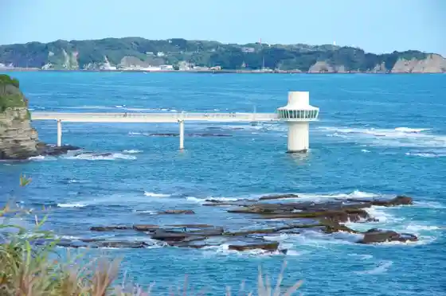
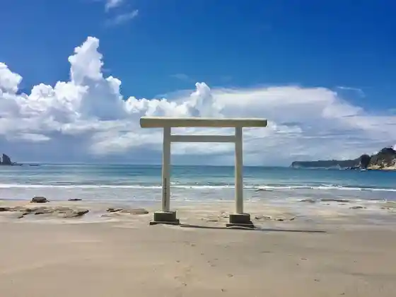
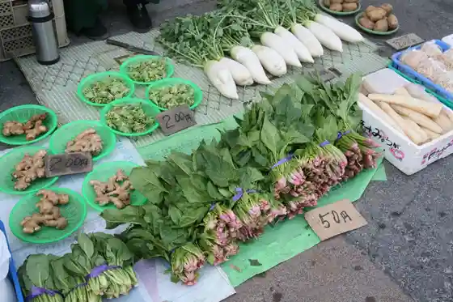
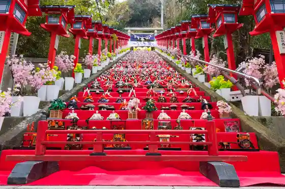

Moriya Coast (Watarishima)
Katsuura, Chiba · 0470-73-6641 · Official / source link
Katsura Kaichu Park
Katsuura, Chiba · 0470-76-2955 · Official / source link

Uhara Coast (Shiroi Torii)
Katsuura, Chiba · 0470-73-2500 · Official / source link

Katsuura Asa City
Katsuura, Chiba · 0470-73-2500 · Official / source link

Tomisaki Shrine
Katsuura, Chiba · 0470-73-0034 · Official / source link

Chiba Prefectural Chuo Museum Bunkan Umi no Museum
Katsuura, Chiba · 0470-76-1133 · Official / source link
Maribupointo (SUP Experience)
Katsuura, Chiba · 0470-64-6480 · Official / source link
Katsuura Chuo Coast
Katsuura, Chiba · 0470-73-6641 · Official / source link
KAPPY Bijita Center
Katsuura, Chiba · 0470-73-2500 · Official / source link
NAGU KATSUURA
Katsuura, Chiba · 090-2210-9911 · Official / source link
Shin Katsuura Gyokyo Katsuura Ekimae Chokubai Tokoro
Katsuura, Chiba · 0470-73-3225 · Official / source link
SGT Art Museum
Katsuura, Chiba · 0470-64-6336 · Official / source link
Aji Sai Kan
Katsuura, Chiba · 0470-73-6222 · Official / source link
Kangun Tsuka
Katsuura, Chiba · 0470-73-2500 · Official / source link
Shin Katsuura Gyokyo Katsuura Kaichukoen Chokubai Tokoro
Katsuura, Chiba · 0470-76-2610 · Official / source link
Taka Sho Tera
Katsuura, Chiba · 0470-73-7474 · Official / source link